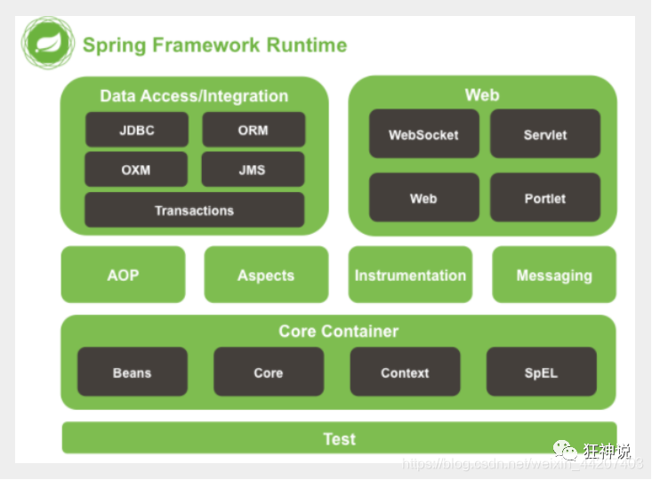
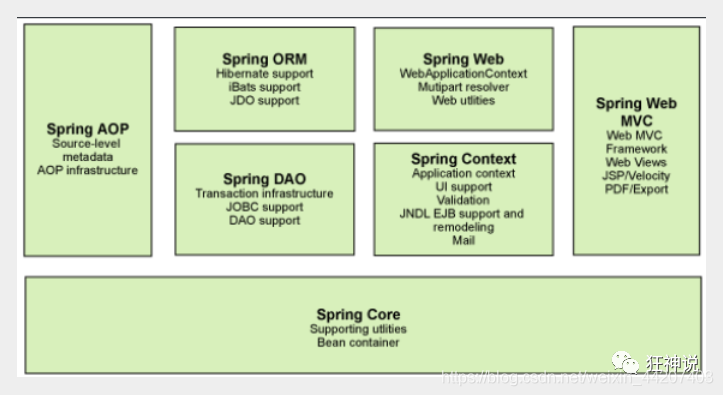
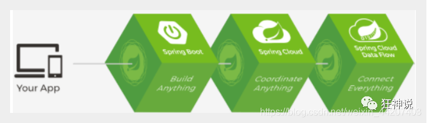

Spring简介
1.1 简介
Spring : 春天 —>给软件行业带来了春天2002年，Rod Jahnson首次推出了Spring框架雏形interface21框架。
2004年3月24日，Spring框架以interface21框架为基础，经过重新设计，发布了1.0正式版。
很难想象Rod Johnson的学历 , 他是悉尼大学的博士，然而他的专业不是计算机，而是音乐学。
Spring理念 : 使现有技术更加实用 . 本身就是一个大杂烩 , 整合现有的框架技术
官网 : http://spring.io/
官方下载地址 : https://repo.spring.io/libs-release-local/org/springframework/spring/
GitHub : https://github.com/spring-projects
< !-- https://mvnrepository.com/artifact/org.springframework/spring-webmvc -->
< dependency>
< groupId>org.springframework< /groupId>
< artifactId>spring-webmvc< /artifactId>
< version>5.2.0.RELEASE< /version>
< /dependency>
< !-- https://mvnrepository.com/artifact/org.springframework/spring-jdbc -->
< dependency>
< groupId>org.springframework< /groupId>
< artifactId>spring-jdbc< /artifactId>
< version>5.2.0.RELEASE< /version>
< /dependency>
< dependency>
< groupId>org.springframework< /groupId>
< artifactId>spring-webmvc< /artifactId>
< version>5.2.0.RELEASE< /version>
< /dependency>
< !-- https://mvnrepository.com/artifact/org.springframework/spring-jdbc -->
< dependency>
< groupId>org.springframework< /groupId>
< artifactId>spring-jdbc< /artifactId>
< version>5.2.0.RELEASE< /version>
< /dependency>
1.2 优点
1、Spring是一个开源免费的框架 , 容器 .2、Spring是一个轻量级的框架 , 非侵入式的 .
3、控制反转 IoC , 面向切面 Aop
4、对事物的支持 , 对框架的支持
…
一句话概括：
Spring是一个轻量级的控制反转(IoC)和面向切面(AOP)的容器（框架）。
1.3 组成
Spring 框架是一个分层架构，由 7 个定义良好的模块组成。Spring 模块构建在核心容器之上， 核心容器定义了创建、配置和管理 bean 的方式 .

组成 Spring 框架的每个模块（或组件）都可以单独存在，或者与其他一个或多个模块联合实现。每个模块的功能如下：
核心容器： 核心容器提供 Spring 框架的基本功能。核心容器的主要组件是 BeanFactory， 它是工厂模式的实现。BeanFactory 使用控制反转（IOC） 模式将应用程序的配置和依赖性规范与实际的应用程序代码分开。
Spring 上下文： Spring 上下文是一个配置文件，向 Spring 框架提供上下文信息。 Spring 上下文包括企业服务，例如 JNDI、EJB、电子邮件、国际化、校验和调度功能。
Spring AOP： 通过配置管理特性，Spring AOP 模块直接将面向切面的编程功能 , 集成到了 Spring 框架中。 所以，可以很容易地使 Spring 框架管理任何支持 AOP的对象。Spring AOP 模块为基于 Spring 的应用程序中的对象提供了事务管理服务。 通过使用 Spring AOP，不用依赖组件，就可以将声明性事务管理集成到应用程序中。
Spring DAO： JDBC DAO 抽象层提供了有意义的异常层次结构，可用该结构来管理异常处理和不同数据库供应商抛出的错误消息。 异常层次结构简化了错误处理，并且极大地降低了需要编写的异常代码数量（例如打开和关闭连接）。 Spring DAO 的面向 JDBC 的异常遵从通用的 DAO 异常层次结构。
Spring ORM： Spring 框架插入了若干个 ORM 框架，从而提供了 ORM 的对象关系工具， 其中包括 JDO、Hibernate 和 iBatis SQL Map。所有这些都遵从 Spring 的通用事务和 DAO 异常层次结构。
Spring Web 模块： Web 上下文模块建立在应用程序上下文模块之上，为基于 Web 的应用程序提供了上下文。 所以，Spring 框架支持与 Jakarta Struts 的集成。Web 模块还简化了处理多部分请求以及将请求参数绑定到域对象的工作。
Spring MVC 框架： MVC 框架是一个全功能的构建 Web 应用程序的 MVC 实现。 通过策略接口，MVC 框架变成为高度可配置的，MVC 容纳了大量视图技术，其中包括 JSP、Velocity、Tiles、iText 和 POI。
1.4 扩展
Spring Boot与Spring Cloud Spring Boot 是 Spring 的一套快速配置脚手架，可以基于Spring Boot 快速开发单个微服务;Spring Cloud是基于Spring Boot实现的；
Spring Boot专注于快速、方便集成的单个微服务个体，Spring Cloud关注全局的服务治理框架；
Spring Boot使用了约束优于配置的理念，很多集成方案已经帮你选择好了，能不配置就不配置 , Spring Cloud很大的一部分是基于Spring Boot来实现，Spring Boot可以离开Spring Cloud独立使用开发项目， 但是Spring Cloud离不开Spring Boot，属于依赖的关系。
SpringBoot在SpringCloud中起到了承上启下的作用，如果你要学习SpringCloud必须要学习SpringBoot。
